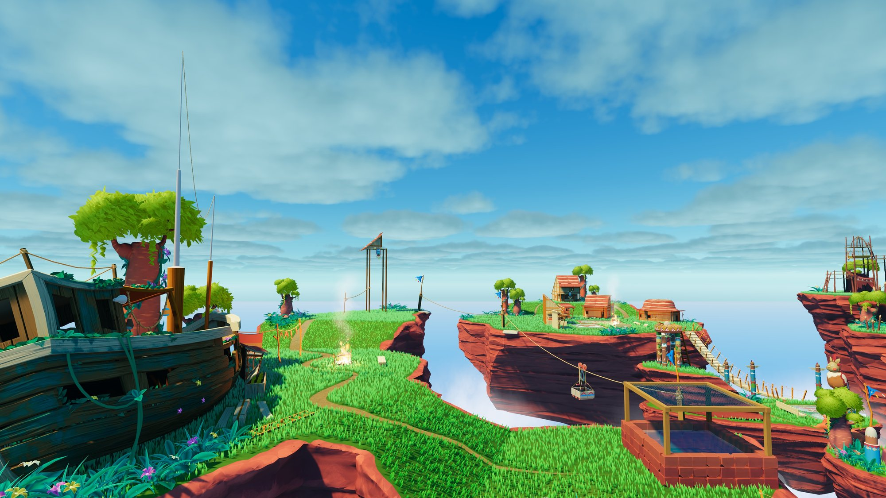
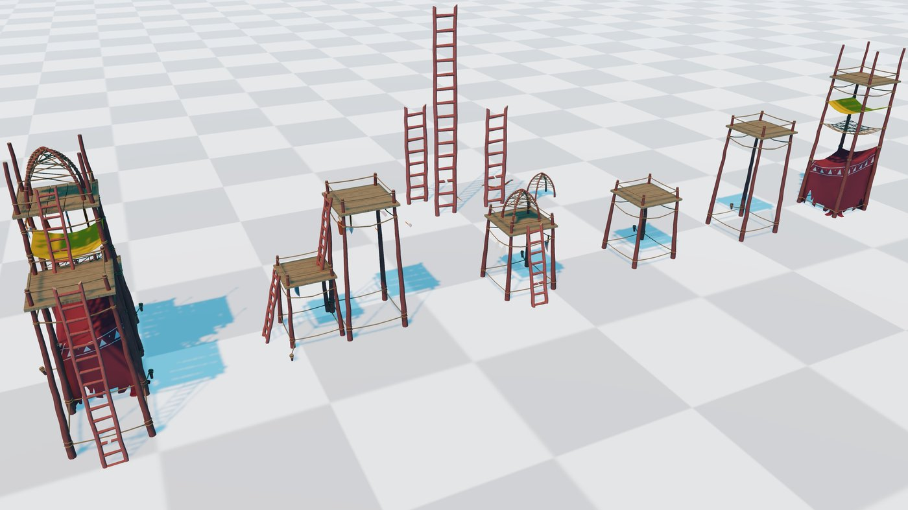

Stylized environment packs for Unity
Hand-crafted low-poly worlds that drop straight into your project: modular kits, ready-made scenes, and the tools to make them yours. Built for URP, with Built-in and HDRP versions included.
Floating Islands
Nine floating islands with a sky village, a ruined temple, hunter camps, a shipwreck and a bonfire. 256 prefabs, modular house and temple kits, Shader Graph materials, and a GPU-instanced grass system that scatters hundreds of thousands of blades at little CPU cost.



What's inside
- 9 islands, each as a bare rock and a fully dressed version
- Modular kits for thatched houses, stone temple ruins and camps
- Props, foliage, trees, shipwreck, fire, fog and water FX
- Custom Shader Graphs: vertex color, triplanar projection, world-space color ramps, water with foam and refraction
- GrassRenderer: GPU-instanced grass with raycast placement, exclusion objects and an in-editor eraser brush
- Two demo scenes with baked lighting
- Unity 2022.3 LTS or newer. URP out of the box, Built-in and HDRP packages included
Support
Questions, bug reports or feature requests: support@example.com. Documentation ships with every pack as a README in Markdown and PDF.